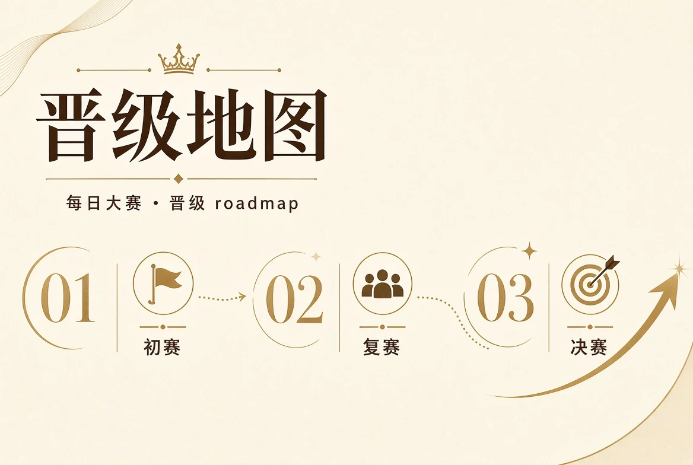

赛事现场
从舞台、造型、镜头和后台协作理解一场正式赛事如何稳定运行，并把安全与秩序纳入表达。
进入赛事现场从现场呈现到参赛安全，每个栏目都对应真实浏览需求，不以无关页面堆叠信息。
从舞台、造型、镜头和后台协作理解一场正式赛事如何稳定运行，并把安全与秩序纳入表达。
进入赛事现场覆盖资格确认、规则、课堂、主题任务和阶段路径，帮助成年参赛者建立完整准备方法。
查看参赛成长说明公开资料、授权作品和阶段展示的边界；资料未正式发布时不虚构人物、成绩或经历。
查看选手作品用阶段状态、评审原则与公示流程解释赛事进展，没有真实日期或结果时保持明确待确认。
查看赛程评审关注舞台趋势、影像表达、职业成长和赛事文化，不用未经证实的数据制造所谓行业结论。
进入资讯观察集中提供移动服务、安全、隐私、帮助与反馈说明，让用户更快识别正式流程和异常请求。
进入服务保障没有正式日期时，进程只描述阶段状态，不编造年月日，也不把阶段完成解释成保证晋级。


舞台表现从入场、停点、转身到离场形成完整节奏。参赛者需要理解音乐、灯位、摄影机和其他参与者的位置，在尊重空间与安全的前提下表达主题。临场变化时，能够保持动作可控、听取调度并及时调整，往往比单一高难度动作更能体现职业能力。
查看舞台观察报名与所有参赛互动仅面向年满18周岁的成年人。准备资料时应确认真实性与授权，训练和舞台环节不接受危险减肥、极端节食、强迫暴露或以晋级为条件越过个人边界。对来源不明的付费培训、单独摄影、经纪合同和要求转账的所谓内部机会，应先核验主体与用途。
公开资料以赛事展示真正需要的信息为限。证件、私人联系方式、详细地址和与赛事无关的生活影像应受到更严格保护。照片与视频必须明确使用范围；如发现资料错误、署名问题或授权超出范围，应通过正式流程申请更正或撤回，而不是在公开区域再次发送敏感材料。

移动端与桌面端保持同样的主要赛事信息，目录和底部导航只用于缩短浏览路径。页面不提供虚假下载链、镜像入口、登录充值、付费投票或博彩功能，也不会要求用户为了查看赛程或结果关闭系统安全保护。
每日大赛把舞台表达、镜头表现、主题理解、造型完成度、现场适应、沟通协作和职业素养视为相互关联的能力。一次赛事结果只能反映特定规则与阶段下的综合判断，不是对个人长期价值的绝对定义，也不构成获奖、签约、出道或商业合作保证。正式结果必须在审核完成后通过官方页面公示；没有可靠资料时保持待确认，比制造虚假名单更重要。
参赛者可以把准备过程当作一次系统复盘：学习如何管理授权作品，如何在舞台上使用空间，如何与摄影、造型和调度团队沟通，如何识别不安全要求，并在结果公布后继续整理自己的作品与职业方向。品牌更重视清晰规则、真实资料和长期可持续成长。
了解每日大赛